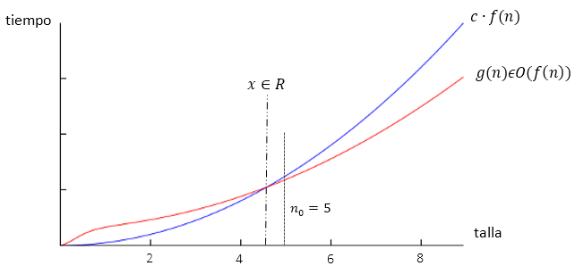
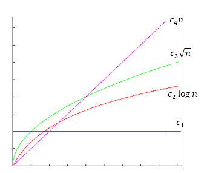
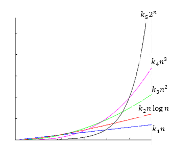

Notación asintótica
En general, el análisis de coste de los algoritmos es especialmente relevante cuando estos se aplican a problemas de gran tamaño (o talla). Casi siempre los problemas pequeños se pueden resolver de cualquier forma y las limitaciones aparecen al tratar problemas grandes. En todo caso, debe tenerse en cuenta que cualquier técnica de ingeniería, si funciona, acaba aplicándose al problema más grande que sea posible: las tecnologías de éxito, antes o después, acaban llevándose al límite de sus posibilidades.
Estas consideraciones llevan a estudiar el comportamiento de un algoritmo cuando se fuerza el tamaño n del problema al que se aplica. Matemáticamente hablando, cuando n tiende a infinito, es decir, su comportamiento asintótico (sin considerar constantes). Se introducirán, por tanto, ciertas herramientas matemáticas fundamentales que simplifican notablemente el análisis de costes y permiten expresar de forma muy concisa los resultados. Aprenderemos a caracterizar el coste mediante funciones simples que acoten superior e inferiormente el coste de todas las posibles entradas para tallas suficientemente grandes. Para ello se necesitan definir familias de cotas.
Orden y omega
La notación Ο(f(n)), que ha de leerse del orden de f(n), es útil para estimar una cota superior del tiempo de ejecución de un algoritmo para entradas de talla n . La Figura 3 muestra qué significa que una función g(n) sea Ο(f(n)).

También es interesante poder estimar una cota inferior del tiempo de ejecución de un algoritmo para entradas de talla n . La notación Ω(f(n)), que se lee omega de f(n), es útil para estimar una cota inferior del tiempo de ejecución de un algoritmo para entradas de talla n .
Orden exacto
El análisis asintótico de un algoritmo resultaría más satisfactorio si pudiéramos acotar a la vez, superior e inferiormente, su tiempo de ejecución por una misma función f(n). Para ello se introduce una última notación
Θ(f(n)) = Ο(f(n)) ∩ Ω(f(n))
que se lee del orden exacto de f(n).
Órdenes de complejidad
Se dice que Ο(f(n)) define un orden de complejidad. Las funciones que pertenecen a cada orden tienen un adjetivo que las identifican y que se recoge en la siguiente tabla:
| Sublineales | Constantes | Ο(1) | |
|---|---|---|---|
| Logarítmicas | Ο(log n) | ||
| Ο(n1/2) | |||
| Lineales | Ο(n) | ||
| Superlineales | Ο(n log n) | ||
| Polinómicas | Cuadráticas | Ο(n2) | |
| Cúbicas | Ο(n3) | ||
| Exponencial | Ο(2n) | ||
| Factorial | Ο(n!) |
Se dice que el coste temporal de un algoritmo es lineal cuando es de Ο(n) y logarítmico cuando es de Ο(log n), etc. En la Figura 4 y Figura 5 se han comparado los órdenes sublineales y superlineales con el orden lineal, respectivamente.


Impacto práctico
Para hacernos una idea de la importancia de los órdenes de complejidad en la Tabla 3 se presentan los tiempos utilizados por las funciones de complejidad para resolver un problema de talla n .
Se observa que los algoritmos de complejidad Ο(n) y Ο(n log n) son los que muestran un comportamiento más natural, al doblar el número de datos procesados se duplica el tiempo necesario para procesarlos.
Los algoritmos de complejidad logarítmica crecen muy lentamente conforme n crece. Necesitan poco más tiempo para procesar el doble de datos.
Los algoritmos de complejidad polinómica presentan dificultades a medida que crece la talla, la práctica viene a decirnos que son el límite de lo tratable. Los cuadráticos dejan de ser útiles para tallas medias o grandes y los cúbicos sólo son útiles para problemas pequeños, complejidades polinómicas de mayor potencia prácticamente son inaceptables.
Cualquier algoritmo por encima de una complejidad polinómica se dice intratable y sólo será aplicable a problemas muy pequeños.
| Talla | log n | n | n log n | n2 | n3 | 2n | n! |
|---|---|---|---|---|---|---|---|
| 5 | 3 | 5 | 12 | 25 | 125 | 32 | 120 |
| 10 | 4 | 10 | 33 | 100 | 1.000 | 1.024 | 3,63 106 |
| 100 | 7 | 100 | 664 | 104 | 106 | 1,27 1030 | > 10100 |
| 200 | 8 | 200 | 1.529 | 4 104 | 8 106 | 1,6 1060 | > 10100 |
| 1.000 | 10 | 1.000 | 9.965 | 106 | 109 | > 10100 | > 10100 |
| 2.000 | 11 | 2.000 | 2,2 104 | 4 106 | 8 109 | > 10100 | > 10100 |
| 10.000 | 14 | 104 | 1,33 105 | 108 | 1012 | > 10100 | > 10100 |
El comportamiento de las funciones de complejidad a medida que crece la talla n del problema expuesto en la Tabla 3, explica el porqué de la búsqueda de algoritmos de complejidad lineal incluso, si es factible y con algo de suerte, de complejidad logarítmica. De no encontrarse un algoritmo de complejidad lineal, un algoritmo de complejidad Ο(n log n) no es mala alternativa. Si se encuentran soluciones polinomiales, se puede tratar con ellas a pesar de las limitaciones que tienen para problemas de talla media y grande; pero ante soluciones de complejidad exponencial más vale seguir buscando.